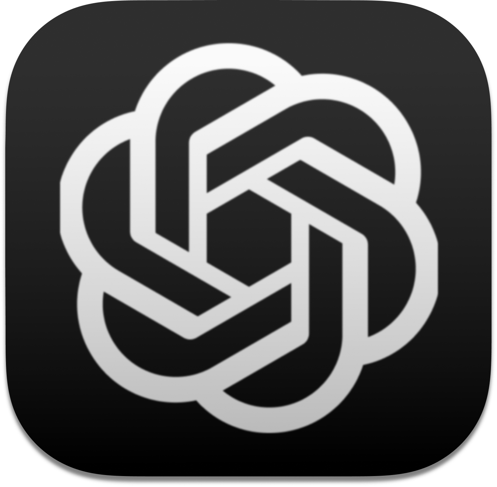

Acesso rápidoChatGPT onde você estiver
Abra uma mini janela sobre qualquer aplicativo sem interromper o que está fazendo.
Alt+Espaço
O atalho pode ser alterado nas configurações do KDE.

Acesso rápidoAbra uma mini janela sobre qualquer aplicativo sem interromper o que está fazendo.
O atalho pode ser alterado nas configurações do KDE.